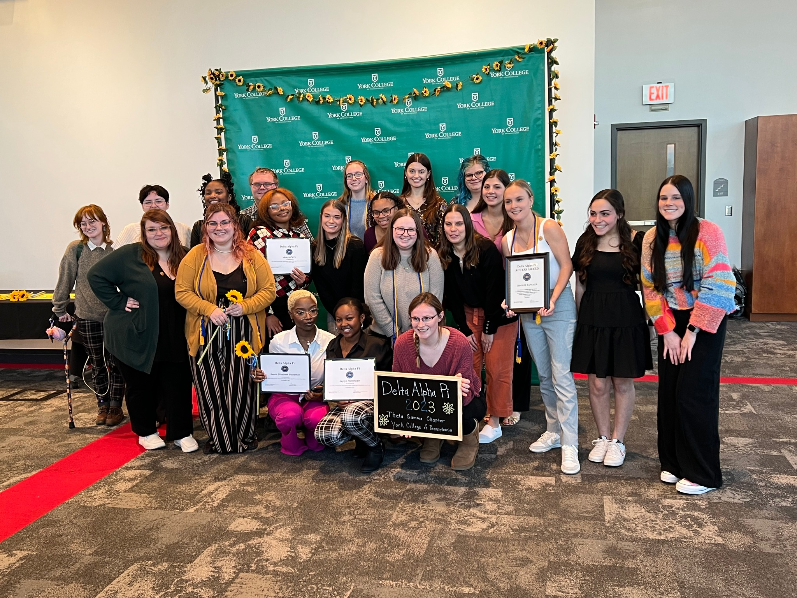

Delta is disability
The triangle is a symbol of strength. Members lead on campus, break down barriers, and mentor other students with disabilities.
Disability. Achievement. Pride.
Delta Alpha Pi recognizes high-achieving college students with disabilities and creates space for leadership, advocacy, and belonging.
Start here
Choose the path that best matches where you are today.
Understand the undergraduate and graduate membership requirements.
Review the criteria 02Find my communitySee where DAPi chapters are represented across the country.
Search chapters 03Explore scholarshipsLearn how DAPi supports high-achieving students with disabilities.
Meet recipients 04Support a chapterFind practical information for advisors, faculty, and campus partners.
Browse resourcesOur purpose
Founded in 2004 at East Stroudsburg University of Pennsylvania, Delta Alpha Pi became a national honor society in 2006 and a nonprofit organization in 2008.
DAPi recognizes students with disabilities for their academic accomplishments while helping members develop leadership and advocacy skills. Members serve as mentors, role models, and educators—working toward communities designed for everyone.
Discover what our letters meanThe triangle is a symbol of strength. Members lead on campus, break down barriers, and mentor other students with disabilities.
Academic achievement comes first. Alpha also represents self-advocacy and advocacy for the full inclusion of people with disabilities.
Members take pride in their achievements and educate their communities about disability and universal design in learning.
Membership
Membership is open to undergraduate and graduate students at colleges and universities with chartered DAPi chapters.
24+ completed credits
3.10+ overall GPA
18+ completed credits
3.30+ overall GPA
Your campus chapter confirms membership and eligibility.
Why join?
DAPi membership recognizes what you have accomplished and helps you build what comes next.
Celebrate your academic achievement as a student who happens to have a disability.
Connect with high-achieving students who understand and support one another.
Build experience through chapter leadership, mentoring, education, and advocacy.
Wear DAPi honor cords at commencement and join a national network of members.

DAPi Scholarship
The DAPi scholarship helps high-achieving students with disabilities complete their postsecondary education. Application information is shared with chapter advisors at the beginning of each spring semester.
Ask about the scholarshipScholarship recipients
Across the country
Search the states currently represented in DAPi’s chapter directory. Your campus disability services office can help you connect with a local advisor.
41 states shown
For faculty & staff
Build a community that recognizes academic excellence, develops student leadership, and advances disability inclusion.
Resources